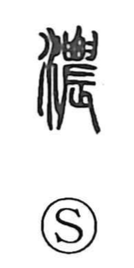

濃

Uncategorized
Kun: koi, komayaka | On: nou
thick ・ dense ・ rich ・ dark ・ deep
Explanation
濃 is a phono-semantic character: the water element signals liquid and moisture, while 農 provides the sound and a vivid image. In Shirakawa’s view, 農 originally evoked tilling with an agricultural implement fashioned from a clam shell (辰), an act of earnest, concentrated labor. From that association it came to suggest warmth and intensity. Joined with water, the character expresses richness and thickness in fluids; early lexicography even glosses it as “abundant dew.” Thus 濃 describes what is dense, deep, and strong—dark in color, thick in substance—and by extension conveys the depth and intensity of human feelings.